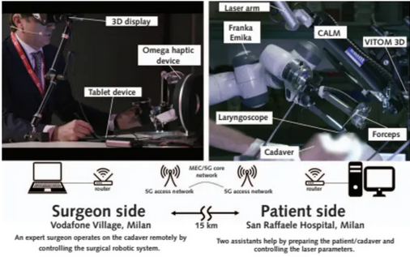

Operating From a Distance: Robotic Vocal Cord 5G Telesurgery on a Cadaver
(opens in new tab)
Venue. AIM (2020)
Materials.
DOI(opens in new tab)
PDF(opens in new tab)
Abstract. Background: The first telesurgery involving a human patient was done in 2001 (1). The patient, located in Strasbourg, France, had a laparoscopic cholecystectomy done by a surgeon in New York. This pioneering experience showed the potential of telehealth technology, but safe, reliable reproduction of this feat proved problematic for many years because of the limited availability of surgical robots and the lack of fast and reliable network connections. Now, however, surgical robots are becoming increasingly common and accepted in operating rooms, and the next generation of mobile networks (5G) is quickly becoming a reality, bringing ultrafast, stable, and reliable …
Link to this page: